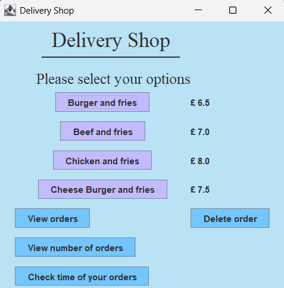
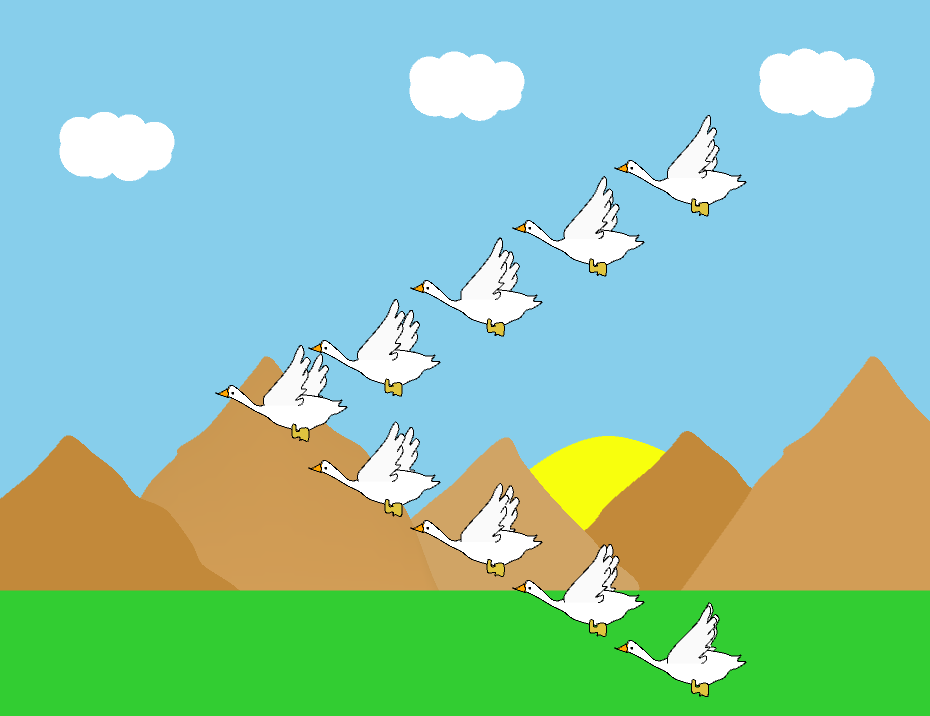
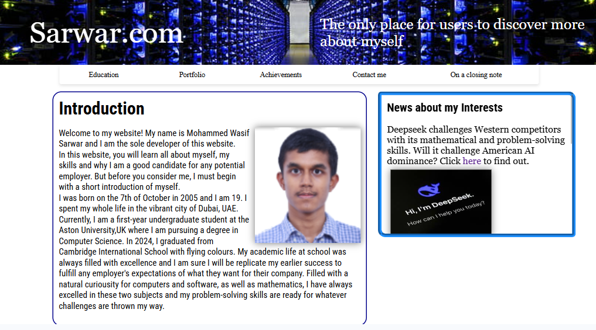

The only place for users to discover more about myself

This was my first GUI interface project in Java. It was a program that was made to meet a challenge that was set by my professor, Dr. Andrew Salisbury, while studying Object Oriented Programming at Aston
University. To improve upon a piece of code given, which did not involve any GUI in its code, was challenging but rewarding. Within this, one can find features used from Java Swing libraries. The GUI created
was purely my own code and not from an IDE GUI editor, which was what made this project so much more tough for a beginner.
To learn more about my future projects or any other queries, complete the form on this page

This was created for submission of assessing knowledge of using Processing. The task called for a basic knowledge of using Processing but I felt the need to go beyond what I was taught. The result was a much
more real-life simulation of seven geese flying in synchronisation compared to what was called for. To create the required artistic effort to make the geese and their wings pixel-perfect required much artistic
effort on my part. Furthermore, the animation in 3D to make the wings flap was the most interesting of all. This animation is also responsive so you can use arrow keys to make the geese fly faster or slower.
Click the mouse for sound effects! This description would not be complete without a big thanks to Daniel Shiffman for his amazing book, Learning Processing.

I think this massive website (at least compared to the other basic webpages I made) is my first ever responsive website (not webpage). It was my first attempt at responsive web design so it was difficult
to get on. Using a mixture of grid, flexbox, and other features, I managed to complete this website with a fully responsive web design (although I am sure there are areas of improvement). Again, I would love to
give credit to three books (other than Aston University): CSS The Definitive Guide, Responsive Web Design with HTML5 and CSS, and Sams Teach Yourself HTML, CSS and JavaScript.